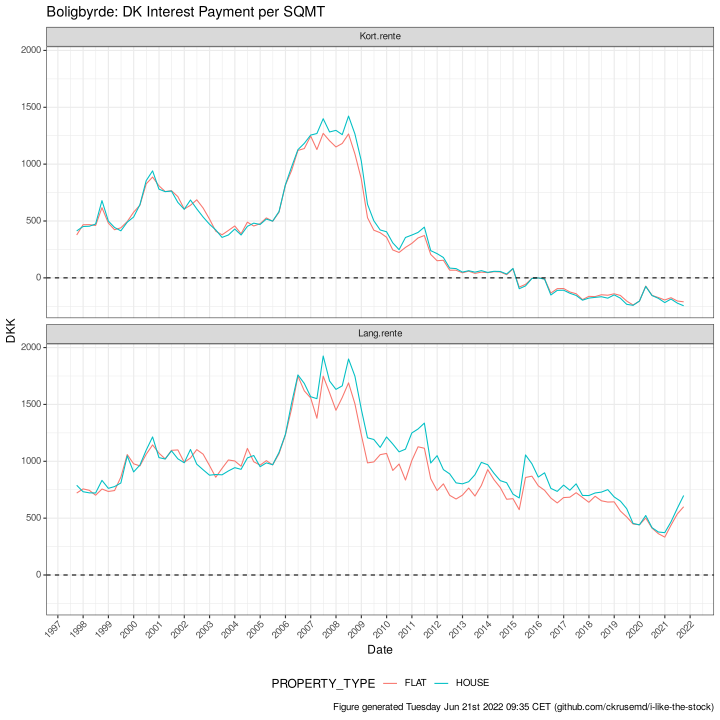
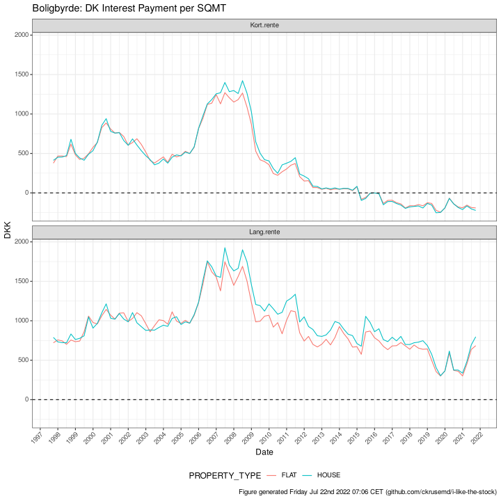

1
Money Printer Go BRRR
2
FED
2.1
Treasury Bonds
2.2
Since 2001
2.2.1
Previous 12 Months
2.3
Yield Curve
2.4
Treasury Bonds Spreads
2.4.1
2-Year to 10-Year T-Bond
2.4.2
Federal Funds Rate to 30-Year Mortgage Spread
2.4.3
30-Year Mortgage to 30-Year T-Bond
2.5
Yield Checkboard
3
Denmark Mortgage Bonds
3.1
Short, Long + Spread
3.1.1
Previous 12 Months
3.1.2
Spread
3.1.3
Short w/ ECB Rate Changes
3.2
Parabolic Support and Resistance
3.3
Historic 5-Year Forward Rate Increases
3.4
Lowest Long Yield and Smallest Spread
3.5
Best Time to Go Fixed
4
Predict US Interest Rates
4.1
Predicted US Yield
4.2
Future Yield Curves
4.3
Future FED FOMC Meeting Rate changes
4.4
Danish Short and Long
4.5
Inflation Expectations
5
Byggekonjunktur
5.1
Flats
5.2
Rolling sums of changes
5.3
Backlog
5.4
Construction Employment
6
Denmark Housing Supply
6.0.1
All time development
6.0.2
Bubble lows
7
Denmark House Prices
7.1
Increases Yearly Since 1992
7.1.1
Houses
7.1.2
Flats
7.2
COVID-19 Increases
7.2.1
Houses
7.2.2
Flats
7.3
MARS Model
7.4
Financial Crisis
7.4.1
Losses by Zip Code
7.4.2
Peak to Low
7.4.3
Simulated if crash reoccurred
7.5
Adjustments
7.6
Sales Times
7.7
Supply
7.8
Insights into last peak
8
Denmark: Building Occupation
8.1
Ratio
9
Denmark: Boligbyrde
9.1
Household income 30%
Denmark: Boligbyrde
9
Denmark: Boligbyrde

9.1
Household income 30%
